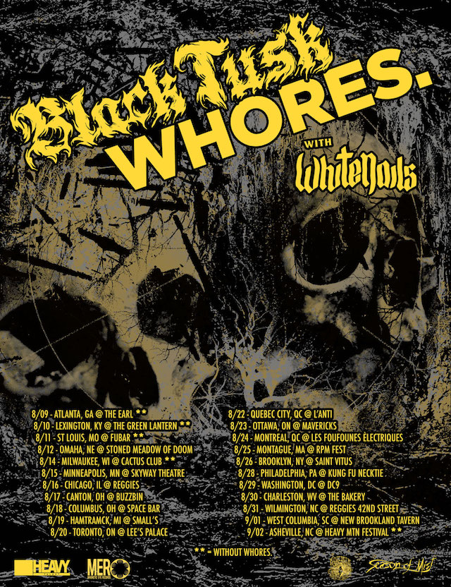

8,684 Miles
Once all the dates settled, we plotted all the venues on the map. Here's then plan: 8,684 miles across 24 cities spread through North America. 4 border crossing. 2 festivals.
One Hell Of A Tour
Here's the official poster of the tour.
Packing Up

Who knew how much details needed to be aligned before leaving. In addition of getting valid visas, we had to find a vehicle, a trailer, and fill up the merch. Each of us had to get their passports up to date.
The Beginnings
While finalizing the last details of our trip, I had that idea to create a blog to keep track of the best (and worst) moment of the tour. For the few geeks out there. The blog is based on Tiddly Wiki, with minor CSS modifications. The code is hosted on GitHub, and Netlify is providing hosting. The plan was to reduce cost while simplifying deployment.